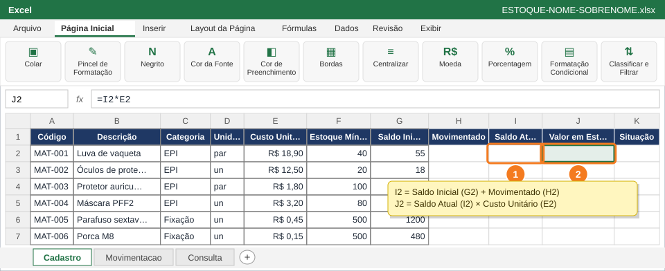
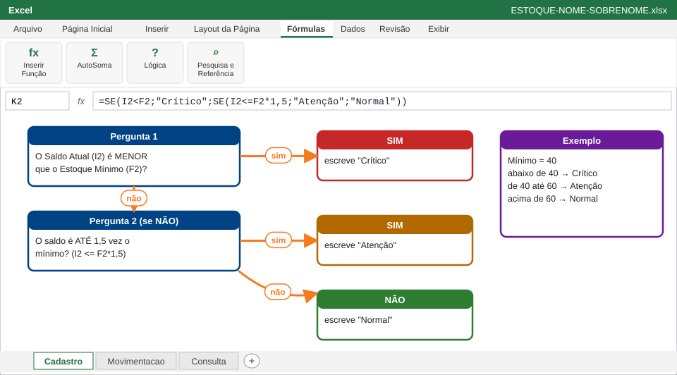

⚠️ AtençãoOs $ travam os intervalos da Movimentacao. O A2 fica sem$ para virar A3, A4... quando a fórmula for copiada.
💡 DicaMaterial sem movimentação no mês dá 0. Está certo!
4
Calcule o Saldo Atual e o Valor em Estoque

Saldo Atual em I2 (1) e Valor em Estoque em J2 (2). Depois copie H2:J2 até a linha 16.
Em I2 (1): Saldo Inicial + Movimentado.
Em J2 (2): Saldo Atual × Custo Unitário. Formate como Moeda.
Selecione H2:J2 e dê duplo clique na alça para copiar até a linha 16.
I2: =G2+H2
J2: =I2*E2
✅ VerifiqueAs colunas H, I e J estão preenchidas nas 15 linhas e o Valor em Estoque aparece em R$.
5
Classifique a situação com SE aninhado

O Excel faz duas perguntas, uma de cada vez, e escreve Crítico, Atenção ou Normal.
Em K2, digite a fórmula abaixo e copie até K16.
O Excel faz as perguntas na ordem: primeiro testa se o saldo está abaixo do mínimo; só se não estiver, testa se está até 1,5 vez o mínimo; se também não, o item está Normal.